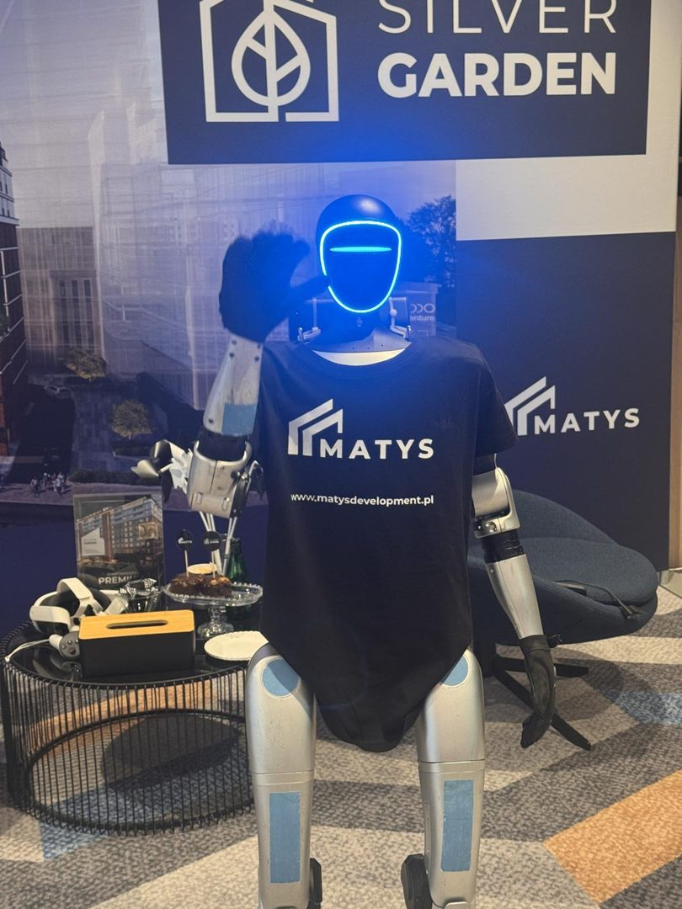

- Strona główna
- Blog
- Pomysły na stoisko targowe
Przewodnik eventowy · Targi
Pomysły na stoisko targowe: jak zatrzymać ludzi i zebrać kontakty
Odwiedzający idą alejką i mają kilka sekund, żeby zdecydować, czy się zatrzymać. Ten poradnik zbiera to, co w tych sekundach działa: ustawienie stoiska, atrakcje, sposób zbierania kontaktów i pracę po targach.

Na dużych targach wystawców liczy się w setkach, a odwiedzający mają ograniczony czas i siły. Większość stoisk mija więc bez zatrzymania. Te, przy których ludzie stają, mają zwykle trzy wspólne cechy: widać z alejki, co tam się dzieje, łatwo podejść, a ktoś z zespołu potrafi zamienić ciekawość w rozmowę. Niżej rozpisujemy każdy z tych elementów.
Najpierw cel, potem atrakcja
Zanim wybierzesz atrakcję, zapisz jednym zdaniem, po co jedziecie na targi. Inaczej planuje się stoisko, które ma zebrać kontakty do handlowców, inaczej takie, które ma pokazać nowy produkt mediom, a jeszcze inaczej stoisko rekrutacyjne. Od celu zależy, czy atrakcja ma przyciągać tłum, czy wybierać z tłumu właściwe osoby.
- Kontakty sprzedażowe: atrakcja ma zatrzymać, a rozmowę prowadzi handlowiec. Liczy się liczba zapisanych kontaktów i ich jakość.
- Premiera produktu: pokaz na żywo o stałych godzinach, materiał dla dziennikarzy i zdjęcia, które chce się udostępnić.
- Wizerunek marki: coś, co ludzie nagrywają i publikują, z Twoim logo w kadrze.
- Rekrutacja: luźniejsza rozmowa, kod QR do ofert pracy, ktoś z działu, w którym szukacie ludzi.
Układ stoiska: otwarty front i wysoki punkt
Najczęstszy błąd to lada lub stół wzdłuż całego frontu. Tworzą barierę i sygnał „tu się nie wchodzi”. Lepiej odsunąć meble w głąb i zostawić przy alejce wolne pole, na którym coś się dzieje: pokaz, ekran z demo, atrakcja.
- Coś wysoko. Logo i jedno hasło na wysokości powyżej głów, żeby stoisko było widoczne z daleka, także gdy przed nim stoją ludzie.
- Jedno zdanie zamiast listy. Z alejki nikt nie czyta wypunktowań. Hasło powinno mówić, co robicie i dla kogo.
- Miejsce na rozmowę. Dwa wysokie stoliki z boku, gdzie handlowiec może spokojnie pokazać ofertę, nie blokując frontu.
- Zaplecze. Schowek na kurtki, ulotki i wodę dla zespołu. Bałagan na stoisku widać z alejki.
Atrakcje na stoisko: co, kiedy i z jakim celem
Atrakcja ma jedno zadanie: dać powód, żeby podejść. Dobierz ją do celu i do grupy odwiedzających. Poniżej najczęstsze pomysły z mocnymi i słabymi stronami.
| Atrakcja | Kiedy ma sens | Na co uważać |
|---|---|---|
| Pokaz produktu na żywo | Produkt da się pokazać w kilka minut i efekt widać od razu | Stałe godziny pokazów, ogłoszone na stoisku i w mediach społecznościowych |
| Kawa z baristą | Targi branżowe, długie dni, odwiedzający zmęczeni | Kolejka po kawę to dobry moment na rozmowę; bez niej zostaje sam poczęstunek |
| Fotobudka lub lustro selfie | Marka konsumencka, młodsza publiczność | Logo na każdym zdjęciu; plik w zamian za e-mail z klauzulą informacyjną |
| Konkurs wiedzy lub umiejętności | Chcesz zebrać kontakty i sprawdzić, kto zna temat | Regulamin; losowanie nagród wymaga zezwolenia jako loteria promocyjna |
| VR lub symulator | Produkt trudny do pokazania fizycznie | Jedna osoba naraz, więc tworzy się kolejka; potrzebna obsługa |
| Krótka prelekcja na stoisku | Masz eksperta, którego ludzie chcą posłuchać | Nagłośnienie i zgoda organizatora; hałas z sąsiednich stoisk |
| Gadżety | Coś użytecznego i związanego z branżą | Rozdawane bez rozmowy nie przynoszą kontaktów |
| Robot humanoidalny | Duże hale, dużo konkurencji o uwagę, marka technologiczna lub chcąca tak wyglądać | Potrzebuje około 2×2 m równej powierzchni przy alejce i gniazdka 230 V |
Ceny popularnych atrakcji zebraliśmy w poradniku Wynajem atrakcji na imprezy i eventy.
Robot humanoidalny na stoisku: jak to wygląda u nas
Robot sprawdza się wtedy, gdy stoi na krawędzi stoiska, zagaduje przechodzących i przekazuje ich zespołowi. Nie zastępuje handlowca, tylko sprawia, że handlowiec ma z kim rozmawiać.
Na targach MSPO w Kielcach robot przez dwa dni pracował na stoisku Grupy Rekord: przedstawiał spółki grupy i zapraszał ludzi z alejki na pokaz. Szczegóły są w case study MSPO. Na targach mieszkaniowych w Szczecinie stał w koszulce Matys Development, a na Warsaw Medical Expo na stoisku Dream-Med.


Pełny dzień targów kosztuje od 5 500 zł netto. W cenie są operator, transport, branding z logo i kodem QR oraz ubezpieczenie. Więcej o tym formacie na stronie wynajem robota na targi.
Zbieranie kontaktów: skaner, formularz, kod QR
Bez zapisanego kontaktu nawet najlepsza rozmowa zostaje na targach. Ustal przed wyjazdem, jak zespół zapisuje kontakty i co dopisuje do każdego z nich.
- Skaner identyfikatorów. Wielu organizatorów udostępnia wystawcom aplikację do skanowania identyfikatorów. Zapytaj o nią przy zgłoszeniu, bo bywa płatna i trzeba ją zamówić wcześniej.
- Krótki formularz na tablecie. Imię, firma, e-mail i jedno pole „czego szuka”. Dłuższe formularze ludzie porzucają.
- Kod QR. Na ścianie, na ladzie albo na atrakcji, prowadzący do strony z ofertą targową lub formularzem.
- Notatka do kontaktu. Jedno zdanie o tym, o czym była rozmowa. Bez niego po tygodniu nikt nie pamięta, kto był kim.
Pamiętaj o RODO: osoba zostawiająca dane powinna dostać informację, kto je przetwarza i w jakim celu. Zgodę na newsletter zbieraj osobno, jako dobrowolne pole.
Zespół na stoisku
- Stoją przodem do alejki, nie siedzą za ladą i nie patrzą w telefon.
- Zaczynają rozmowę pytaniem otwartym, nie „w czym mogę pomóc?”.
- Mają grafik zmian i przerwy poza stoiskiem. Zmęczonego zespołu nie da się ukryć.
- Wiedzą, kto zajmuje się jakim tematem, żeby szybko przekazać rozmowę właściwej osobie.
Przed targami i po targach
Przed: wyślij klientom i potencjalnym klientom zaproszenie z numerem stoiska i powodem, żeby przyjść, na przykład godziną pokazu. Umów konkretne spotkania z osobami, które i tak będą na targach.
Po: odezwij się do zebranych kontaktów w ciągu kilku dni, póki pamiętają rozmowę. Podziel kontakty na gorące, do dalszej rozmowy i do newslettera. Na koniec policz, ile kontaktów i spotkań przyniosły targi i ile kosztował jeden kontakt. Jak to policzyć dla atrakcji, opisujemy w tekście ROI robota na stoisku targowym.
Lista kontrolna stoiska targowego
- Cel targów zapisany jednym zdaniem.
- Front stoiska otwarty, atrakcja przy alejce.
- Hasło i logo widoczne z daleka.
- Sposób zbierania kontaktów ustalony i sprawdzony przed otwarciem hali.
- Klauzula informacyjna RODO przy formularzu lub skanerze.
- Grafik zespołu i godziny pokazów.
- Zaproszenia wysłane, spotkania umówione.
- Plan kontaktu po targach i sposób liczenia wyników.
Najczęstsze pytania
Otwórz front stoiska, postaw przy alejce coś, co się rusza lub dzieje na żywo, i daj odwiedzającym jasny powód, żeby podejść: pokaz produktu, kawę, konkurs albo atrakcję. Najważniejsze jest jednak to, co dzieje się potem: ktoś z zespołu musi podejść, porozmawiać i zapisać kontakt.
Tak, jeśli zdjęcie niesie Twoją markę, na przykład ramkę z logo albo tło z hasłem, i jeśli dostęp do wydruku lub pliku wymaga zostawienia adresu e-mail. Fotobudka bez tego jest po prostu miłą rozrywką.
Losowanie, w którym o wygranej decyduje przypadek, jest w świetle ustawy o grach hazardowych loterią promocyjną i wymaga zezwolenia. Prościej zorganizować konkurs, w którym o nagrodzie decyduje wiedza lub umiejętność, z krótkim regulaminem.
Osoba zostawiająca dane powinna wiedzieć, kto je przetwarza i w jakim celu, czyli dostać klauzulę informacyjną, np. na formularzu lub tabliczce przy skanerze. Zgodę na newsletter zbiera się osobno, jako dobrowolne pole.
Od kilkuset złotych za kawę z baristą na jeden dzień po kilka tysięcy za pokaz lub fotobudkę 360. Robot humanoidalny 33bots kosztuje od 5 500 zł netto za pełny dzień targów, z operatorem, transportem i brandingiem.